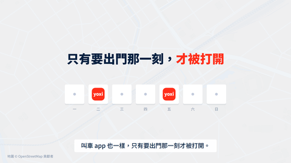
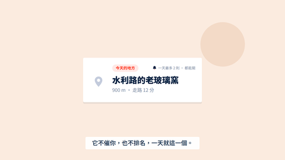
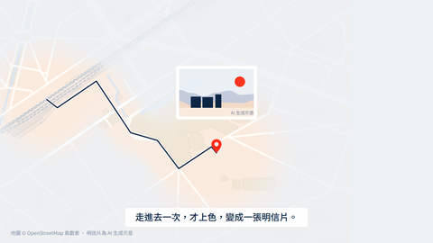
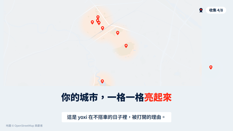
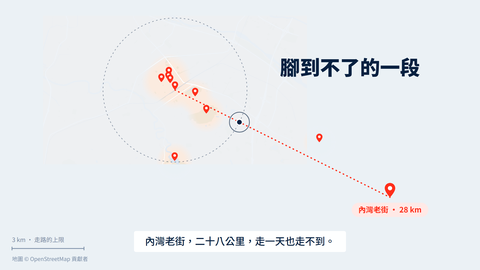
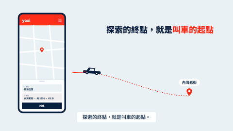
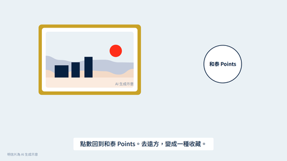
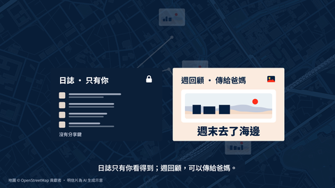
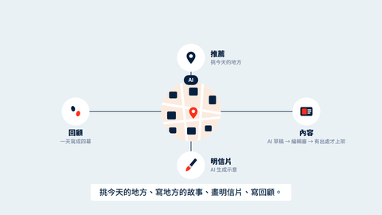
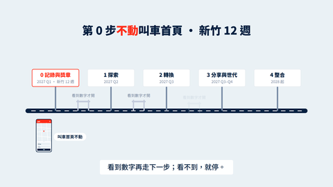

#1 0:00.0–0:10.0 10.0 秒
開場 quiet 淺色
只有要出門那一刻，才被打開
一座城市，你每天經過，卻很少真的走進去。
叫車 app 也一樣，只有要出門那一刻才被打開。
淡霧下的真實新竹街道（HSMAP fog 風格）慢慢平移。前景一排 7 個「日子」方塊，只有 2 格亮起 yoxi 紅色 app 圖示，其餘灰；第二句時大字浮現。
站在 yoxi 的角度講痛點，不講「我們相信」。
總長 2:07.5（127.5 秒，實測（TTS wav 長度＋前後留白 0.25／0.65 秒）），13 個鏡頭 · 上限 3:00 · 向量動畫（pitch/video/anim/）· 旁白與數字的真相在 shots.json／script.md

#1 0:00.0–0:10.0 10.0 秒
開場 quiet 淺色
只有要出門那一刻，才被打開
一座城市，你每天經過，卻很少真的走進去。
叫車 app 也一樣，只有要出門那一刻才被打開。
淡霧下的真實新竹街道（HSMAP fog 風格）慢慢平移。前景一排 7 個「日子」方塊，只有 2 格亮起 yoxi 紅色 app 圖示，其餘灰；第二句時大字浮現。
站在 yoxi 的角度講痛點，不講「我們相信」。
#2 0:10.0–0:19.1 9.1 秒
開場 question 深色
給它一個跟車無關的理由
不搭車的日子，yoxi 能不能還是被打開？
我們的答案是：給它一個跟車無關的理由。
海軍藍底。題目「不搭車，也打開 yoxi」逐字打出，停一拍；第二句時「一個跟車無關的理由」以紅色強調滑入，題目退淡。
題目原文只在畫面引用，不改字。
#3 0:19.1–0:27.7 8.6 秒
願景 name 淺色
一天一個地方 · 走得到就走 · 走不到就用 yoxi 去
遊喜樂，一天只給你一個地方。
走得到就走，走不到，就用 yoxi 去。
字標「遊喜樂」放大定住，下方三個短句依序亮起（走得到就走＝步行小人；走不到就用 yoxi 去＝小車）。背景霧地圖只開一個洞。
產品一句話照 BRIEF §1，不改。

#4 0:27.7–0:36.8 9.1 秒
A 不搭車的日常 morning 淺色
一天就這一個
早上一則提醒，說今天有個地方離你不遠。
它不催你，也不排名，一天就這一個。
晨光色。一張卡從下方升起：「今天的地方 · 水利路的老玻璃窯 · 900 m · 走路 12 分」（數字讀 TIMELINE.calc.kiln）。地圖上對應的灰 pin 呼吸發亮。沒有徽章、沒有倒數、沒有紅點。
走路分鐘＝公尺 ÷ 75，畫面上的數字由 timeline 帶入，不手寫。

#5 0:36.8–0:46.8 10.1 秒
A 不搭車的日常 walk 淺色
到了才上色
走過去。路過一百次都是灰的地方，
走進去一次，才上色，變成一張明信片。
步行小點沿真實街道從車站走到玻璃窯，霧沿路開；抵達瞬間灰 pin 爆開變紅、周圍一圈上色、一張明信片從 pin 升起（角落小字「AI 生成示意」）。
抵達是示意；明信片是 AI 生成示意，畫面要有標。

#6 0:46.8–0:57.4 10.5 秒
A 不搭車的日常 lightup 淺色
你的城市，一格一格亮起來
日子一天天過，你的城市一格一格亮起來。
這是 yoxi 在不搭車的日子裡，被打開的理由。
鏡頭拉遠到整個新竹（wide 資料集），霧上的洞一個接一個開、灰 pin 依序變紅；右上小小的「收集 4/8」獎章；第二句時大字浮現。
沒有連續天數、沒有排名；獎章寫「收集 4/8」。

#7 0:57.4–1:05.4 8.1 秒
B 搭車的轉換 far 淺色
腳到不了的一段
總有些地方，腳到不了。
內灣老街，二十八公里，走一天也走不到。
再拉遠，地圖邊緣之外是留白；一條虛線從城市伸向右邊很遠的一顆 pin「內灣老街 · 28 km」；步行小點在地圖邊緣停下。3 km 的小尺標對比。
走路門檻 3 km：超過才建議叫車。

#8 1:05.4–1:14.4 9.0 秒
B 搭車的轉換 ride 淺色
探索的終點，就是叫車的起點
按一下，它變成下車點，yoxi 帶你去。
探索的終點，就是叫車的起點。
左側向量手機：yoxi 叫車首頁（紅頁首、地圖、底部拉把）一個像素不動，只有「下車點」欄位被填上「內灣老街 · 約 $691 · 65 分」（數字讀 TIMELINE.calc.neiwan）。右側小車沿虛線滑到遠方 pin。
車資與車程是公式；「設為下車點」是產品設計，不說成 AI。

#9 1:14.4–1:24.6 10.2 秒
B 搭車的轉換 gold 淺色
去遠方，變成一種收藏
搭 yoxi 抵達的地方，明信片鑲金框，
點數回到和泰 Points。去遠方，變成一種收藏。
一張明信片放大，金框從四角合攏；幾枚點數硬幣飛進「和泰 Points」圓環；背景是一排已收藏的明信片（其中一張金框）。
「限定版」在簡報改稱「搭 yoxi 抵達版」；點數級距在簡報講，影片不唸數字。

#10 1:24.6–1:34.7 10.1 秒
C 晚上的回顧 night 深色
只有你的那一軌，和可分享的那一軌
晚上，今天走過的路，自己變成一則回顧。
日誌只有你看得到；週回顧，可以傳給爸媽。
海軍藍夜色。今天的路線在地圖上自己畫出來，收成四格小畫面（四幕）；第二句時畫面分兩軌：左「日誌 · 只有你」帶鎖頭，右「週回顧 · 傳給爸媽」變成一張暖色大字的長輩圖。
日誌沒有分享鍵；分享的圖不含位置資訊。

#11 1:34.7–1:46.7 12.0 秒
AI ai 淺色
AI 的四個角色：推薦 · 內容 · 明信片 · 回顧
AI 在後面安靜做四件事：
挑今天的地方、寫地方的故事、畫明信片、寫回顧。
它不搶戲，只讓每一天都有一個理由。
城市縮成一個圓，四個小圖示繞著它依序亮起：推薦（pin＋理由條）、內容（草稿 → 編輯審 → 有出處才上架）、明信片（畫筆）、回顧（四格）。每個圖示下一行小字。
「設為下車點」不是 AI。內容產線要看得到「編輯審」。

#12 1:46.7–1:56.6 9.8 秒
路線圖 roadmap 淺色
第 0 步不動叫車首頁 · 新竹 12 週 · 看到數字再走
第零步不動叫車首頁，新竹先試十二週。
看到數字再走下一步；看不到，就停。
一條向量道路從左到右，五個里程碑依序立起：0 記錄與獎章（2027 Q1 新竹 12 週）→ 1 探索（Q2）→ 2 轉換（Q3）→ 3 分享與世代（Q3–Q4）→ 4 整合（2028）。第 0 步旁有一支不動的叫車首頁小手機加盾牌；每個里程碑之間有一道「看到數字才開」的閘門。
階段名照 catalog.js ROADMAP；季度照 pitch/docs/roadmap.md。試辦週數讀 TIMELINE.calc.pilotWeeks。
#13 1:56.6–2:07.5 10.9 秒
結尾 end 深色
遊喜樂
遊喜樂。
不搭車的日子，也有打開 yoxi 的理由。
而搭車的日子，會因此多起來。
海軍藍底，字標放大置中；兩行標語依序浮現；下方小字：題目全名、「畫面為向量示意 · 明信片為 AI 生成示意 · 地圖資料 © OpenStreetMap 貢獻者（ODbL）」。
結尾卡的署名不要剪掉。